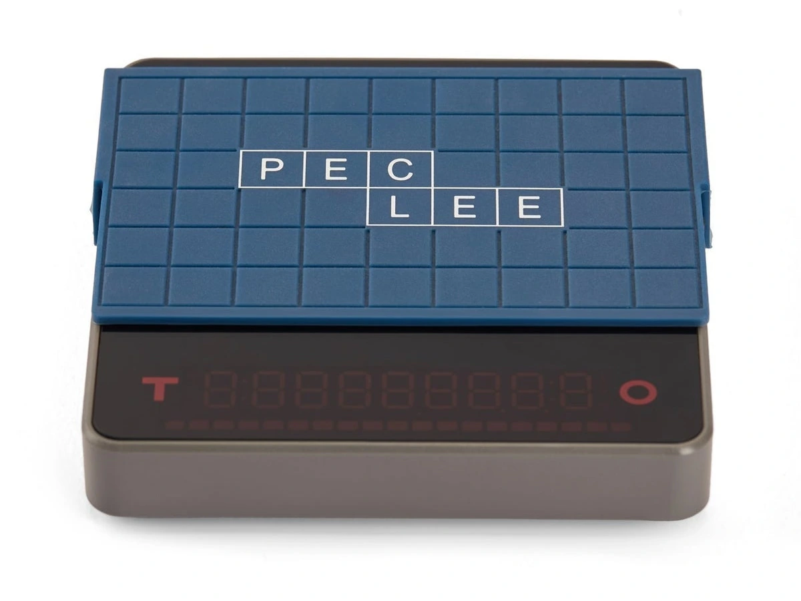

بيسو أم بيسوميني؟
يعرض الميزانان الوزن بتدرّج ٠٫١ غرام. ما يحسم الاختيار هو المساحة المتاحة تحت فوهة الإسبريسو، أو وزن إبريق التقديم وأدوات التقطير بعد إضافة الماء.


الأبعاد والأوزان
| القياس | بيسو | بيسوميني |
|---|---|---|
| الطول × العرض × الارتفاع | ١٣٠ × ١٢٤ × ٢٣٫٥ مم | ٩٠ × ٨٥ × ١٢ مم |
| نطاق الوزن | ٠٫٢–٢٠٠٠ غرام | ٠٫٢–١٥٠٠ غرام |
| أصغر تدرّج | ٠٫١ غرام | ٠٫١ غرام |
| الوزن | ٣٤٠ غرام | ١٦٠ غرام |
هل يتّسع المكان للميزان تحت فوهة الإسبريسو؟
ابدأ بقياس الجزء المستوي من صينية التنقيط. يحتاج بيسوميني إلى مساحة ٩٠ × ٨٥ مم، بينما يحتاج بيسو إلى ١٣٠ × ١٢٤ مم. قِس بعد ذلك المسافة بين الصينية وأدنى فوهة، واطرح منها ارتفاع فنجانك. احسب حساب ارتفاع الميزان واترك متّسعًا لإخراج الفنجان. يبلغ ارتفاع بيسوميني ١٢ مم، فيترك لك فراغًا إضافيًا قدره ١١٫٥ مم مقارنةً ببيسو.
ما الوزن الذي يحمله الميزان أثناء التقطير؟
احسب وزن الإبريق والقمع والفلتر والبن والماء معًا. إذا كان الوزن قبل السكب ٨٥٠ غرامًا، وأضفت ٧٠٠ غرام من الماء، فسيحمل الميزان ١٥٥٠ غرامًا. هذا ضمن سعة بيسو البالغة ٢٠٠٠ غرام، ويتجاوز سعة بيسوميني البالغة ١٥٠٠ غرام. زر التصفير يعيد القراءة إلى الصفر، لكن وزن الأدوات يظلّ جزءًا من الحمل الفعلي.
عند تجهيز حقيبة السفر
يزن بيسوميني ١٦٠ غرامًا ويشغل حيّزًا أصغر في الحقيبة. وإذا كانت صينية آلتك صغيرة، فاقصص ورقة بأبعاد الميزان وضعها على الصينية مع فنجانك المعتاد لتتأكّد من ملاءمة المساحة.
تشتري من السعودية؟ ستجد في صفحة كل ميزان رابط المنتج على نون السعودية.